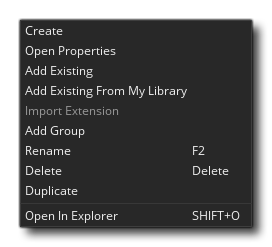
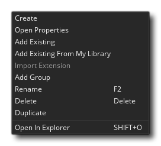

游戏的核心将通过资源创建并被添加到资源树中。 这是所有你可以添加的游戏运行所需内容，包括房间，精灵，物体，路径和其他一些内容。 GameMaker Studio 2 中的游戏至少需要一个房间来运行，至少存在一个物体和一个精灵，当然你不止会使用一个！ 你可以通过右键单击
你可以通过右键单击  资源树来添加资源，然后从弹出菜单中选择 创建 选项（有关此弹出菜单的详细信息，请参阅下文）。所有可用资源操作都是如此，但每种资源都有自己的专用的编辑器，当你完成上述操作时会打开它。 请注意，资源树左上角有 全部折叠 按钮 ，可用于关闭所有已打开的资源文件夹。
资源树来添加资源，然后从弹出菜单中选择 创建 选项（有关此弹出菜单的详细信息，请参阅下文）。所有可用资源操作都是如此，但每种资源都有自己的专用的编辑器，当你完成上述操作时会打开它。 请注意，资源树左上角有 全部折叠 按钮 ，可用于关闭所有已打开的资源文件夹。
你可以通过单击以下任一按钮，从资源树中查看每种可用资源的简要概述：
精灵通常是你创建的游戏中的物体的视觉表现。 因此，精灵使用 GameMaker Studio 2 图像编辑器来绘制图像，或使用外部绘图程序制作并导入到 GameMaker Studio 2 中。使用的图像不一定是单个静态图像，也可以是“长带”图像，即单个精灵中含有多个图像，可用于制作一个动画精灵。 例如，以下10张图像就形成一个精灵，是一个跳伞时挥舞着双臂的角色。
实际完成的动画放置在游戏中看起来是这样的：
像上图这样的精灵通常是一个 PNG 格式的文件，但是 GameMaker Studio 2 也兼容 SWF 格式的矢量精灵和 JSON 格式的 Spine 精灵（及其伴随的atlas条状图像）。
你可以从 精灵编辑器 部分中了解更多关于添加和编辑精灵的信息。
图块集从精灵资源中获取，但是由于 GameMaker Studio 2 在创建游戏时会以不同于精灵的方式编辑图块集，所以它们被单独分类出来。基本上，一个基础图块就是一个单一图像，GameMaker Studio 2 将根据你所设置的各种值将图像拆分成不同的基础图块。 然后，你可以在房间编辑器（或在程序中通过代码）使用这些图块在房间中生成图块地图。它们可以在房间中很方便地组合出各种静态物品，如地形，墙壁，背景等，并且它们不需要像物体那么多的系统资源。
上图是一个示例精灵，被用作绘制墙壁的图块集。正如你所看到的，它被“分割”成 64x64 个像素块，然后将其放入房间编辑器组合。
注意：图块 总是正方形的，所以如果你需要制作其他形状，那么应该在房间编辑器中使用其他形状实例组成的精灵或在资源层中制作。
你可以从 图块集编辑器 部分中找到有关添加图块集的更多信息。
不论是用声音来增加游戏性，还是用声效来提供游戏反馈，以及用音乐来烘托气氛，都说明声音是游戏的重要组成部分。GameMaker Studio 2 兼容 WAV、 MP3 和 OGG 格式的声音文件。
通常来说，WAV 格式的文件适合存放短音效，因为WAV格式文件较大，但是WAV格式不需要解码就可以直接播放。MP3 和 OGG 格式的文件则适合存储背景音乐以及一些需要长时间播放的声音。这两种格式的文件储存同样的内容时远小于 WAV 格式文件，但是他们需要一定的计算资源来在播放前进行解码。
你可以在 声音编辑器 部分找到更多有关信息。
在你创建游戏过程中的某些时候，你可能需要物体的某一实例沿着一定的路径来通过这一关。你可以先简单地在房间中创建一些简单的位置排列，接着让实例在他们之间移动。但这个工作很繁重而且不好修改，测试和适配。这时你需要创建一个路径资源。
>
路径资源的基本思路很简单-你可以通过在路径编辑器中绘制路径来对路径资源进行定义，然后你可以通过在物体的事件中放置动作模块或者添加代码来使物体在房间中沿着特定路径（来行动）。你可以设置物体跟随路径的速度以及房间中其他一些关于路径的位置和方向的值。
你可以在路径编辑器部分中找到其他相关信息。
脚本资源是一个你自己创建的功能函数的代码集合。例如，假设你想让一个敌人在死的时候创造一些实例，比如掉一些金子，产生爆炸或者流血效果，以及发出一些声音。为此你 可以 将实现这些效果的代码添加到每个物体的中，但是更好的方法是创建一个脚本资源，在其中输入实现上述功能的代码，然后在每个物体中调用它。这样的话，你只需在物体中添加一行调用代码即可调用此脚本实现预期的功能，如果你希望修改一些代码，你只需要在脚本中更改，所有调用的物体会自动运行新的代码。而不需要在所有物体中逐一修改，并且在多个地方修改同样的代码。
你可以在 脚本编辑器 部分找到更多相关信息。
着色器是一个非常强大的工具，可用于操纵渲染到屏幕上的图像，其速度之快和范围之大都令人难以置信，例如，它可以给精灵添加细微的色调，直到产生全屏失真的效果。从本质上说，它们是直接运行在显卡上的由两个部分组成的程序。因为GPU承担了所有工作，所以CPU能够干更多事来提高游戏性能。完整的着色器由顶点着色器程序和片段着色器程序（也称为像素着色器）组成。这两个微程序一起工作，来操纵显卡在屏幕上显示图形。 这样就允许你实时将位置，颜色和 alpha 信息渲染到显示缓冲器中。
GameMaker Studio 2 支持以下着色器语言：
着色器语言 目标平台 GLSL ES 全平台 GLSL Mac 和 Ubuntu (Linux) HLSL11 Windows, UWP, XboxOne PSSL Playstation 4
你可以在Shader Editor着色器编辑器 部分找到更多相关信息。
当你在游戏中绘制文本时，默认情况下该文本以标准 Arial 12 号字体绘制。但是为了使字体更独特有趣，你可能希望使用其他不同的字体，这里就要用到字体编辑器了。在字体编辑器中，你可以选择你的计算机中的一种字体，将其导入 GameMaker Studio 2 中，以便在创作游戏的过程中使用，并设置大小，粗细，或者样式等属性。导入并添加为字体资源后，你就可以使用代码或其他操作将其变为绘图了。
注意：如果你在游戏中使用某字体，请确保你拥有该字体的使用许可证，公用或者免版税字体除外。
你可以在 字体编辑器 部分找到更多相关信息。
在大部分游戏中，你可能希望一些事情在特定的时间里发生。你可以通过在实例中使用 闹钟事件 来实现该目的，但是当事情很复杂的时候，闹钟事件就不太适用了，特别是闹钟事件的设置上限为12个。这就是为什么会存在时间轴资源的原因。在时间轴中，你可以设置在游戏内事件的任何特定时刻要执行那些操作，并且可以在不同的事件以及代码中使用可用于物体的所有操作。创建时间轴后，你可以将其分配给某个物体，然后该物体的实例将在所放置或者创建的房间在指定时刻执行操作以及代码。
你可以在 时间轴编辑器 部分找到更多相关信息。
物体是一个用来控制游戏各方面的具体事件的特殊资源。大多数时候这些物体都会关联一个精灵以便可以在房间中看见。但有时候它们也被用作“幕后”控制器来做与用户或时间相关的事情。它们可以被给予行为，并能对事件和它们自己做出反应。你在游戏看到的大多数事情都是基于物体和它们的相互作用。请注意，我们说‘基于’是因为你并不能直接把物体放置在房间中，而是将这些物体的 实例 （相当于物体资源的副本或拷贝）放置入其中。这是非常重要的事情，因为物体和实例不一样，各自有一组可设置的属性。
所有物体都有一组可在物体编辑器中被设置的属性，例如链接精灵，是否使用物理规则，或者设置为其他物体的子物体。他们还具有一系列内置变量，可以在动作模块，脚本以及代码中使用。这些内置变量用于定义实例放置在游戏室中的位置，动画速度，移动方向以及其他一些内容。为了更好地控制随时间推移中的物体，每帧游戏内容都会被分割成一系列 事件，所以你可以将代码或动作模块添加到某一个事件中。事件只有在被触发时才会运行，事件可以通过操作鼠标或者与其他实例碰撞等来触发。
物体实际上是游戏的构建模块，它与房间一起构成了所有游戏项目的核心。
你可以在 物体编辑器 部分找到更多相关信息。
你在 GameMaker Studio 2 中所做的游戏至少需要一个房间来运行（当然可以不止一个），一个房间是一个基础空间，你可以在其中放置组成游戏的物体的实例，这里也是实例的事件触发和实现的场所。当然房间编辑器也是你可用的最强大的资源编辑器之一，因为它不仅允许你添加物体的实例，还可以添加图像，添加背景以及图块来绘制创建游戏世界，创建独立于物体/实例系统的额外特殊效果，以及独立于物体来运行代码。房间也可以设置从其他房间 继承 资源，这意味着你可以创建一个房间，然后在其中加载图块，然后再创建一个房间来继承这些图块，以便使你不必重复两次操作来加载图块。
你可以从 房间编辑器 中找到更多相关的信息。
顾名思义，包含文件是在你将游戏导出到目标平台时，希望包含在游戏包中的所有文件。 这些文件可以是从文本文档，图像，到压缩文件，以及可以使用各种 文件函数 进行访问，遵循 文件系统 定义规则的文件。
你可以从包含文件部分找到有关包含文件的更多信息。
扩展是你可以添加的附加文件和代码，以扩展 GameMaker Studio 2 的功能，以及从 Marketplace 向游戏添加资源。 扩展的格式将根据最终的目标平台而有所不同，一般它们采用C ++，C＃或 JavaScript 编写，然后使用 GML 中的 特定函数 来进行解析。
你可以从 扩展编辑器 的部分中找到有关添加扩展的更多信息。
游戏选项 资源由整个项目和你希望导出的每个目标平台的一系列不同选项组成。无论你提供的平台是什么，你将始终拥有一个 主要 的游戏选项资源来设置特定项目，如游戏速度等。有关更多信息，请参阅 游戏选项 部分。
在这里，你可以选择或创建要用于资源树的配置，以及随后的整个项目。 刚入门时配置可能不是那么重要，但是随着预计目标平台的复杂性和数量的增加，你会发现它们是组织和导出你游戏的宝贵工具。 本质上，它们保存了资源树的不同游戏选项和导出选项的配置，这意味着你可以对 Android 平台进行特定配置，而另一种用于 Windows 平台等。有关详细信息，请参阅 配置 页面。

如果你想要更深入地了解如何使用这里列出的不同编辑器，那么你应该在这里查看说明手册里说明更详细的部分：
右键菜单
使用资源树时，可以在资源或文件夹上点击鼠标右键  打开选项菜单 ：你可以使用的选项有：
打开选项菜单 ：你可以使用的选项有：
- 创建 - 创建你打开菜单所点击类型的新资源。
- 打开属性 - 打开所点击资源类型的资源属性编辑器（请注意，你也可以双击
 ）。
）。
- 添加现有资源 - 从不同的 GameMaker Studio 2 项目文件夹中添加现有资源。
- 从我的库添加现有资源 - 从 Marketplace 库向资源树添加资源。
- 导入扩展 - 导入扩展资源到你的项目（仅适用 扩展 资源）
- 添加组 - 在点击的位置向资源树添加新的资源组文件夹。
- 重命名 - 重命名资源或资源组文件夹。
- 删除 - 从项目中删除资源（将会完全删除，除非 你在设置中修改了默认值- 请参见下文）。
- 复制 - 创建所点击资源的副本。
- 在资源管理器中打开 - 打开该工程文件中用来存储资源的文件夹。
请注意，并非所有选项都可用于所有资源类型，你可以使用哪些选项取决于资源类型或是否为文件夹。
项目视图
资源树顶部有一个名为 Views 的区域，它使你能够设置一个或多个自定义资源树，以便每次只显示你要处理的项目部分，或者以不同的方式显示，例如分级。默认视图是上面列出的标准资源树布局，但是有两个选项可以让你根据需要来创建新视图。
| 这将创建从先前选择的视图克隆来的资源树新视图。 因此，如果你在默认视图中单击此选项，那么它将会为你准备一个精确复制的副本，然后基于此进行编辑。 | |
| 这将创建资源树的新视图，且不添加任何资源（即空白视图）。 然后，你可以使用鼠标右键菜单（见下文）来添加资源并根据需要进行组织。 |
当使用除默认项目视图之外的任何项目视图时，你可以随意拖放资源，并将文件夹重命名为任何你希望的内容。 以这种方式，你可以设置适合你需要的资源树视图。 例如，假设你有一个具有多世界的平台游戏 - 你可以使用名为 “World 1”，“World 2” 等的文件夹创建资源树的 “World View”，然后拖动精灵，图块集， 与每个世界相关联的实例和房间到所需的文件夹。 或者你在一个团队工作，你想要创建一个“艺术家视图”，那么你可以创建一个资源树，只显示精灵，实例和房间。
你也可以使用按钮  删除视图（不可用于默认视图），只需点击名称并输入所需的新名称即可重命名视图。 注意，不在默认视图中的资源其鼠标右键菜单
删除视图（不可用于默认视图），只需点击名称并输入所需的新名称即可重命名视图。 注意，不在默认视图中的资源其鼠标右键菜单  略有不同，具有以下选项：
略有不同，具有以下选项： 大多数选项都是显而易见的，但应该说明， 创建 将允许你在项目的自定义视图中的任意位置创建新的资源（它将被添加到资源树的默认视图中的对应资源文件夹中），并 且从默认视图添加 选项将允许你将资源从默认资源树传输到自定义视图中。如果你选择克隆默认视图，则所有这些操作都不是必需的，因为所有当前资源都将被复制在其中，但是如果你使用空白视图或使用鼠标右键的删除选项从新视图中 删除 该项目，那么当需要该资源时，你需要重新添加。请注意，使用 删除 不会从项目中删除资源，并且仍将在默认资源树中显示该资源，如果你希望完全删除资源，而不仅仅是从视图中删除资源，则该视图应该是你所使用的视图。
大多数选项都是显而易见的，但应该说明， 创建 将允许你在项目的自定义视图中的任意位置创建新的资源（它将被添加到资源树的默认视图中的对应资源文件夹中），并 且从默认视图添加 选项将允许你将资源从默认资源树传输到自定义视图中。如果你选择克隆默认视图，则所有这些操作都不是必需的，因为所有当前资源都将被复制在其中，但是如果你使用空白视图或使用鼠标右键的删除选项从新视图中 删除 该项目，那么当需要该资源时，你需要重新添加。请注意，使用 删除 不会从项目中删除资源，并且仍将在默认资源树中显示该资源，如果你希望完全删除资源，而不仅仅是从视图中删除资源，则该视图应该是你所使用的视图。
你现在应该了解了可用于制作游戏的基本资源，因此我们可以继续阅读并了解使用 GameMaker Studio 2 创建新项目的一般工作流程。